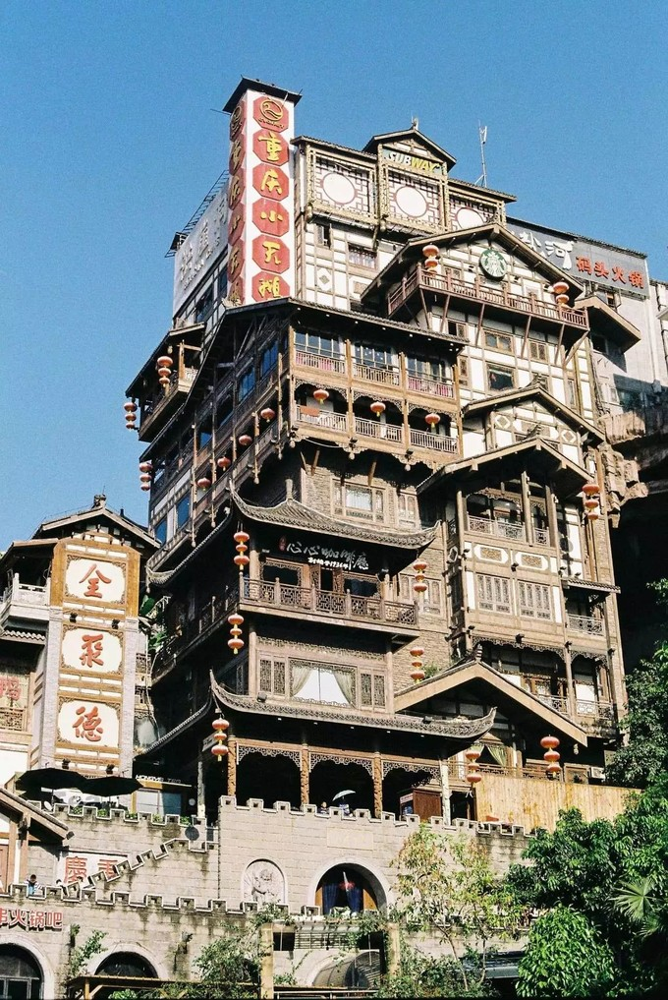
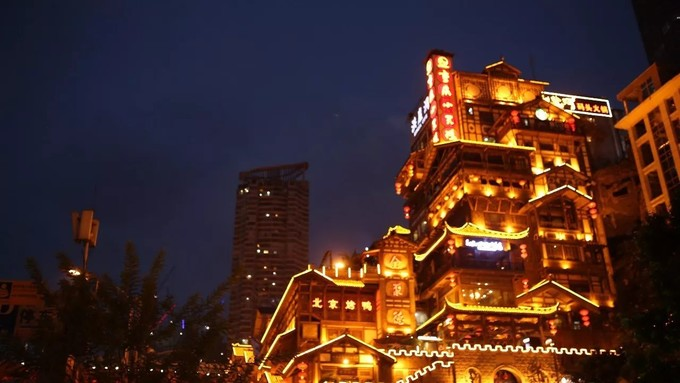

洪崖洞几乎是每个到重庆旅游都要去的地方，这里你能够彻底的感受到重庆山城的独特魅力，建筑十分有山城特色， 古朴的吊脚楼在夜晚的灯光照耀下会更加美丽。洪崖洞民俗风貌区作为国家级AAAA旅游风景区。他与朝天门广场、 解放碑商务区共同形成了重庆最具市民及游客追捧的游览胜地。“洪崖洞”用创新的思维把古老的巴渝吊脚楼建筑艺 术注入全新的文化理念之中；与江景和城市风貌完美融合，以75米高的超常落差，顺崖而上，高低错落、依山而建。
它浓缩了重庆三千年历史沉淀，融重庆独特的巴渝民俗文化、山地民居的建筑文化、码头文化于一体，成为倍受世界 瞩目的，独特靓丽的城市名片。如今，热度持续升温的洪崖洞民俗风貌区，以其独特的人文内涵和璀璨的建筑特色， 已然成为人流量仅次于故宫，国内外游客争相打卡、驻足、游览的重庆地标性景区。每一天，洪崖洞以其独特的魅力 和不可复制的特色，吸引着来自全球各地的游客前来观光游览。
是不是有点眼熟！没错，这里就是传说中的千与千寻同款建筑！要是不看标识在里面我真的是不知道自己在几楼。 外表看上去非常像是汤婆婆的汤屋，提醒要记住“不努力工作会变成猪！”
为提升洪崖洞景区游玩体验，实现智慧景区，安全旅游的目的。洪崖洞自2019年7月1日起，已经开始试行线 上预约入园。请有前往计划的游客朋友，提前搜索官方公众号——“洪崖洞”，进入页面后点击左下角“预约取 票”，根据行程安排，提前领取免费电子入场券，现场验券入园。或可凭身份证，在现场排队依次入场。此 方式为唯一入园方式，请注意随身物品及出行安全，谨防上当受骗！祝您在洪崖洞度过愉快的一天。